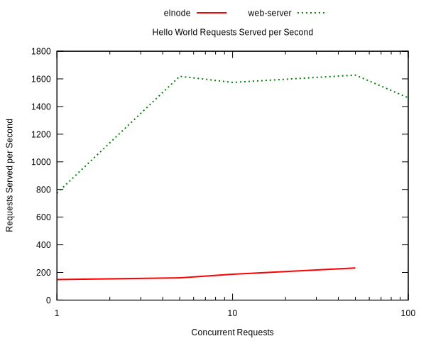
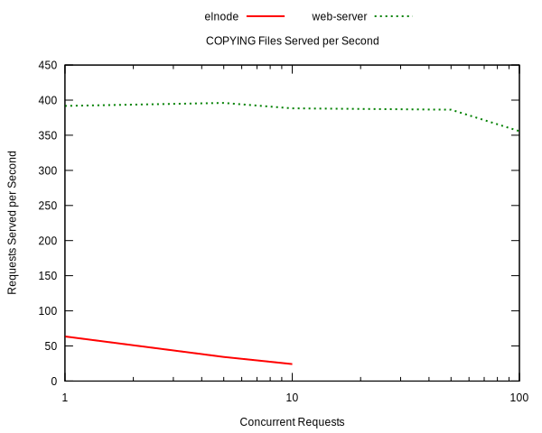

Benchmark
Benchmark comparison of web-server and elnode using the Apache Benchmarking tool (ab).
Hello World
Serving the string "hello world" to every request.
| concurrency | elnode | web-server |
|---|---|---|
| 1 | 148.33 | 773.17 |
| 5 | 160.8 | 1618.41 |
| 10 | 186.81 | 1574.55 |
| 50 | 232.23 | 1627.28 |
| 100 | NA | 1463.5 |

- Web Server "hello world" handler.
(ws-start '(((:GET . ".*") . (lambda (request) (with-slots (process) request (ws-response-header process 200 '("Content-type" . "text/plain")) (process-send-string process "hello world"))))) 9000)
- Elnode "hello world" handler.
(elnode-start (lambda (httpcon) (elnode-http-start httpcon 200 '("Content-Type" . "text/plain")) (elnode-http-return httpcon "hello world")) :port 8000)
File Server
Serving the COPYING file distributed with Emacs.
| concurrency | elnode | web-server |
|---|---|---|
| 1 | 63.41 | 391.78 |
| 5 | 34.25 | 396.05 |
| 10 | 24.17 | 388.33 |
| 50 | NA | 386.42 |
| 100 | NA | 355.88 |

- Web Server file server handler.
(lexical-let ((docroot "/usr/share/emacs/24.3/etc/")) (ws-start (list (cons (cons :GET ".*") (lambda (request) (with-slots (process headers) request (let ((path (substring (cdr (assoc :GET headers)) 1))) (if (ws-in-directory-p docroot path) (ws-send-file process (expand-file-name path docroot)) (ws-send-404 process))))))) 9000))
- Elnode file server handler.
(elnode-start (lambda (httpcon) (elnode-docroot-for "/usr/share/emacs/24.3/etc/" :with file :on httpcon :do (elnode-send-file httpcon file))) :port 8000)
Method
- The machine used was my ThinkPad x220 laptop with two dual-core Intel i7 CPUs.
- Apache Benchmarking tool (ab) was run with the following command.
Only results for successful runs are reported; elnode handles at
most 50 concurrent requests, and web-server handles at most 100
concurrent requests.
for c in 1 5 10 50 100 250 500 750 1000;do ab -n 5000 -c $c http://127.0.0.1:8000/ >elnode/$c.txt echo $c done
- The elnode server is run with the following
emacs -Q \ -L elnode-0.9.9.7.6 \ -L fakir-20130711.1322 \ -L dash-20131207.215 \ -L noflet-20130901.922 \ -L s-1.8.0 \ -L creole-20130802.122 \ -L db-20130125.1029 \ -L kv-20130818.337 \ -L web-20130827.512 \ -l elnode -file ../src/web-server/doc/benchmark/elnode-hello-world.el
- The Emacs web-server is run with the following.
emacs -Q -L ../.. -l web-server -file ws-hello-world.el
- The following Emacs version was used.
GNU Emacs 24.3.1 Copyright (C) 2013 Free Software Foundation, Inc. GNU Emacs comes with ABSOLUTELY NO WARRANTY. You may redistribute copies of Emacs under the terms of the GNU General Public License. For more information about these matters, see the file named COPYING.
- Results were collected with the following.
grep -ri "requests per second" ./web-server/ ./elnode \ |sed 's|./||;s|/|\t|;s/.txt.*second: */\t/;s/ \[.*$//'
- Full
aboutput files are available benchmark.tar.bz2.